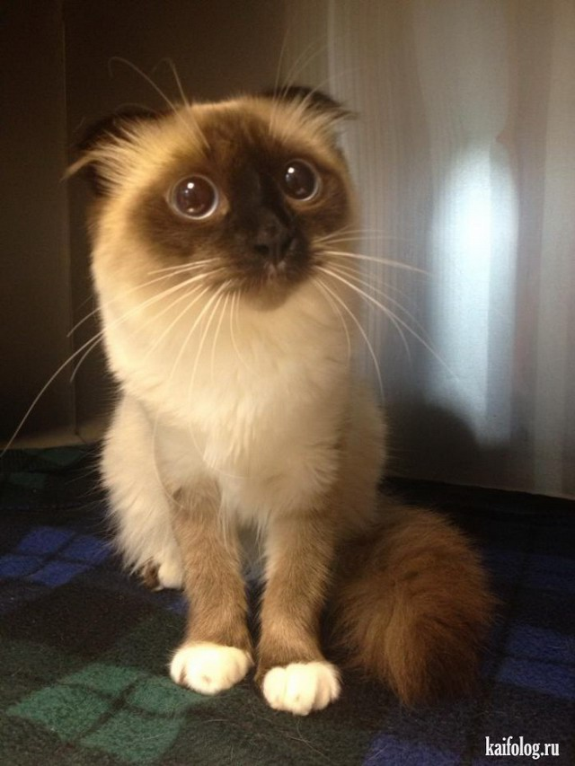
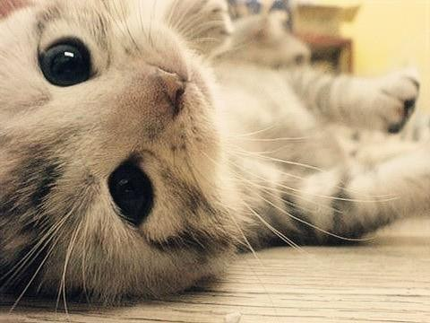

Васька
рыжие

500р
Хорошо ли иметь дома рыжего кота? Рыжий кот: примета счастья?
Давным – давно, в стародавние времена люди заметили,
что рыжие коты и кошки приносят счастье!
Именно рыжая кошка является душевной поддержкой и опорой для человека,
который болен или же просто грустит!
Приметы народом придумывались не зря. Это не просто фантазия, а наблюдения мудрых людей.
Настоящими защитниками считались именно рыжие коты и кошки.
Некоторые люди даже верили в их особенные свойства, фактически волшебные.
Так что, определенно, вам нужен этот замечательный дерзкий кот!

Август
черны как ночь
200р
Солнечнечный пушистый мальчик.
Родился в сентябре, кушает сухой корм, мурлыкает и смешит своими играми.
Умеет делать супер круглые глазки!

Том
Рыжие
700р
Ослепительной красоты, харизмы и элегантности!
Обучен в лучших традициях кошачьей аристократии, знает этикет, любит позировать и обнимания.
6 месяцев.

Вишенка и Персик
Пушистики
400р
У нашей красавицы кошечки родились замечательные котята, Окрас потрясающий.
Игривые, с хорошим аппетитом, приучены к лотку.
Котята породистые.
Котята полностью привитые от вирусных заболеваний, приученные когтеточке, сухому корму.
Очаровательные котята ищут и ждут заботливых друзей!

Еська
Пушистики
300р
Шикарная девочка от породистых родителей. Малышке сейчас 3 мес.
Кошечка продается с документами, подойдет для выставок и в качестве домашней любимицы.
У малышки отличный нрав, она очень любит людей, мурчать и сидеть на ручках.
Кошечка знает лоточек на отлично, кушает сухие и влажные корма, а также натуральную еду с
удовольствием. Полностью готова к переезду в новый дом.

Абрикос
рыжие
600р
Шикарная смесь перса и сиамца, удивительная красота, невероятная милота, и просто ата та та!
Всего 2 месяца и уже умными глазами ловит взгляд.
Кушает кашки на молочке, рыбные супчики а вот корма предпочитает подороже..)
Хорошим людям - Хороший кот!

Валера
Пушистики
250р
Самый любимый котик моей бабушки.
Без комментариев.

Корнелий
Пушистики
250р
Мягкий, большой, супер-пупер деревенский кот.
Ленивый, самодостаточный, с важным видом.
Каждая уважающая себя семья должна иметь такого кота!

Саманта
беляши
250р
Бывает дерзкой, бывает милой.
Невероятно красивая малышка, мечтает с тобой подружиться.

Багира
черны как ночь
не продается
А это моя самая любимая кошечка.
Без комментариев.